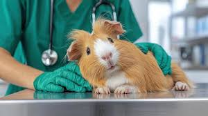

A healthy PurrPets Guinea Pig is a "chatty" Guinea Pig! Since they hide pain, regular check-ups at home are the only way to stay ahead of potential issues.

| Area | Healthy Signs | Warning Signs (Call Vet!) |
|---|---|---|
| Eyes | Clear, bright, and alert. | Cloudiness, crusting, or "receded" eyes. |
| Breathing | Silent and effortless. | Clicking sounds, wheezing, or labored breathing. |
| Feet | Pink and soft pads. | Redness, swelling, or crusts (Bumblefoot). |
| Weight | Consistent (800g - 1200g). | A drop of 50g or more in one week. |
If a Guinea Pig doesn't get enough Vitamin C, they can't make collagen. This leads to Scurvy, causing painful joints, bleeding gums, and a lack of appetite. At PurrPets, we ensure every piggie gets a daily serving of fresh bell pepper to prevent this!
Guinea Pig teeth never stop growing. If they don't have unlimited Timothy hay to chew on, their teeth can become overgrown and "bridge" over their tongue, preventing them from eating. Hay is not just food; it's a dental tool!